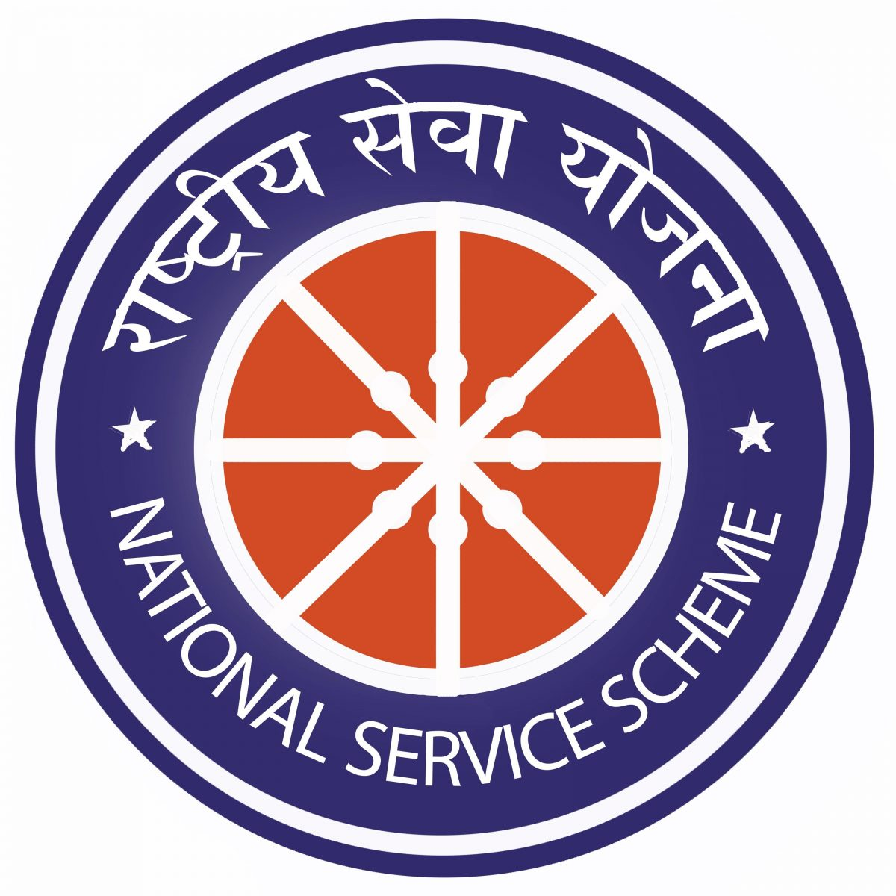
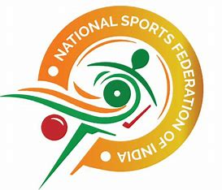
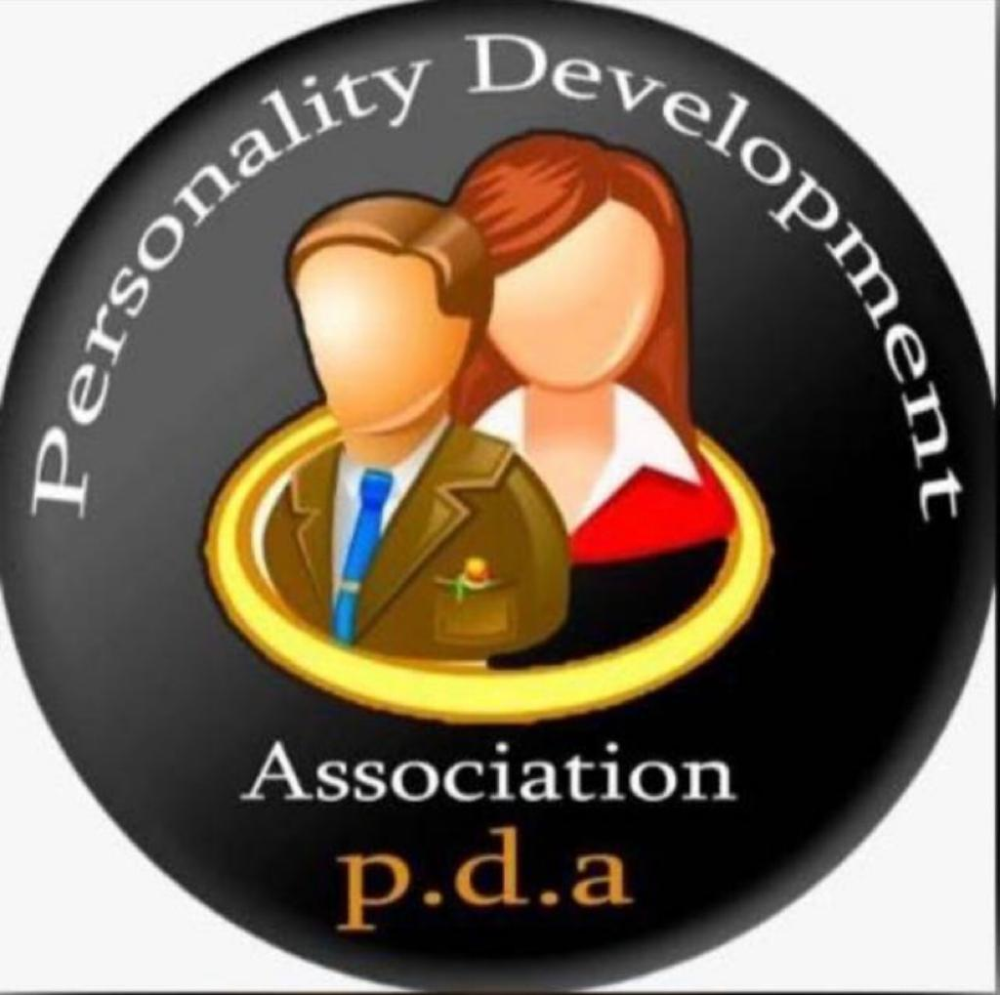
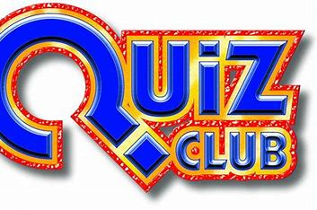

The Youth Red Cross Club at MIT College stands as a testament to the spirit of compassion and altruism thriving among the youth. Established with the noble objective of instilling a sense of humanitarianism and community service, this club has become an integral part of the college's social fabric. Comprising dedicated and enthusiastic members, the Youth Red Cross Club is committed to making a positive impact on both the campus and the wider community.
The National Service Scheme (NSS) is a prominent youth-centric program implemented across colleges and universities in India. NSS is a voluntary public service initiative that aims to inculcate the spirit of community service, social responsibility, and civic engagement among students. Each college with an NSS unit operates as an extension of the National Service Scheme, a flagship program under the Ministry of Youth Affairs and Sports, Government of India.
The National Sports Organisation work in coordination with various levels of government, educational institutions, and sports clubs. These organizations often have specific roles, such as organizing national-level competitions, promoting sports education, and supporting the development of athletes.
Personality Development Association (PDA) is an interdisciplinary Forum in MIT. It provides platform to the students who aspire to be different in the society by discovering themselves. The association aims to develop individual skills of students and make them face the global competitive environment.
Quiz Club of MIT is a student organization which was formed in the year 2011 as an informal organisation to nurture the general knowledge skills of budding engineers in MIT. Started with only a handful of people, but the Quiz Club of MIT now has more than 100 students from various departments as active members. The club was made official in February 2015 which permitted the organization to include the first year students to take part in the club's events. Our quizzes have always been able to provide global information ranging from current affairs, Science & technology, History to Sports, Entertainments, Arts, etc., and been able to keep students in pace with the developments happening all over the world.